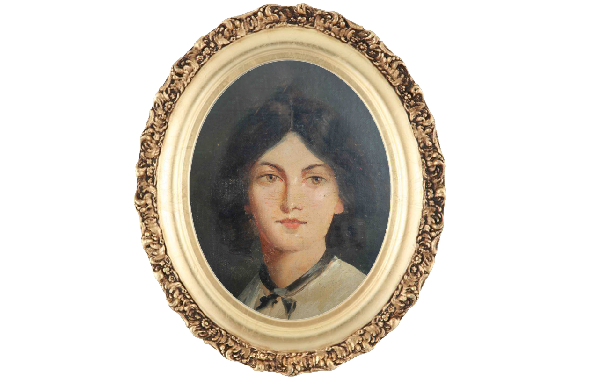

빅토리아 시대의 여성상은 ‘Angel in the house’라고 일컬어진다. 이 시대의 여성들은 남편에게 순종적이고 가정에서는 희생하고 따듯하고 가정적인 여성상을 강요 받았다. 이러한 사회적인 분위기 속에서도, 억압된 여성의 목소리를 드러낸 작가가 바로 에밀리 브론테이다. 그녀는 부유하지 못 한 환경에서 자랐고 황무지가 펼쳐진 지역에서 컸다. 그녀는 수줍음이 많고 말수가 적었다. 그러나 강직한 심성을 지녔고 그녀의 안에는 강렬한 열정과 자유가 있었다. 이러한 그녀의 성장배경은 폭풍의 언덕이란 명작을 쓰는데 커다란 영향을 미쳤다.



당시 신분이 높지 않은 여성 지식인이 할 수 있는 직업은 교사가 전부였고 교사의 일은 고되고 보수는 적었다. 부유한 적이 없었던 그녀는 일을 하면서도 글을 써야 했다. 글을 쓰면서 익명성을 지키기 위해 남성스러운 필명을 사용했고 당시 여성관을 가지고 있던 비평가들은 에밀리 브론테를 남성으로 착각하기도 했다. 시인으로서 뛰어난 재능을 보였으나 시집은 팔리지 않아 소설을 쓰게 된다. 그녀의 소설 워더링 하이츠(폭풍의 언덕)은 당시 파격적인 내용으로 검열되고 극심한 비판을 받았다.

워더링 하이츠의 여자주인공 캐서린은 당시 사회에 반하는, 충격적인 인물이었다. 생동감이 넘치는 강하고 자유로운 여성이 자신만의 열정을 갖고, 생각을 하고, 사회 관습에 도전했다. 당시 늘 일관적이고 단면적인 여성을 그리던 남자 작가들과 다르게, 캐서린은 살아있는 여성이었고 자신만의 충동과 열정을 가진 인물이었다. 도덕적이고 교훈적인 글만이 인정받던 빅토리아 시대에 그녀의 글은 파격적이었다. 새로운 전개와 인물들을 통해 인간의 감정(passion)을 누구보다 강렬하고 섬세하게 표현했다. 당시 사회에선 금기시되던 인간의 강한 열망, 충동을 다뤘다. 여성을 통제하려는 가부장제와 그 안에서 고통받는 여성을 표현하였고 20세기에 이르러야 그녀의 명작 폭풍의 언덕은 그 가치를 인정받을 수 있었다. 당시는 충격과 금기였던 워더링 하이츠는 지금은 널리 읽히는 고전 명작으로 통한다. 에밀리 브론테는 궂은 환경과 상황속에서도 자유로운 여성을 그리며 조용하지만 강인한 삶을 살다 끝네 30살의 나이에 사망하게 된다.